沒有出生，就沒有流浪。
Fewer births, fewer strays.
Caring for the animals of the Southern Cross-Island Highway.
從六龜到甲仙，我們在南橫山區抓紮、救援、送養，讓每一個流浪的生命，都被友善對待。
一隻一隻，慢慢累積
-
2,805隻
犬貓完成結紮
-
120隻
在狗園收容照顧
-
7年
在南橫山區的堅持
-
365天
風雨無阻的餵養
結紮數字更新至 2026 年 11 月，持續增加中。
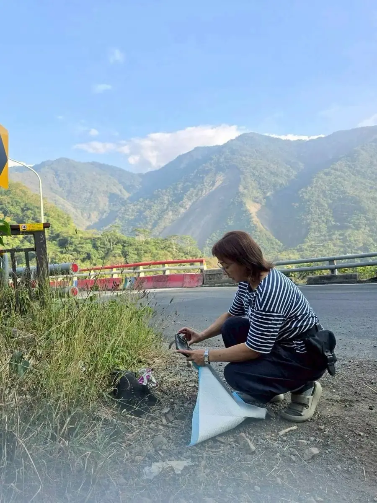
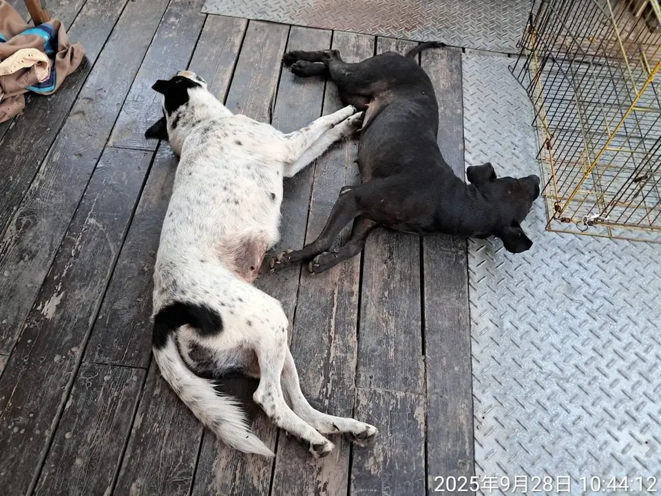
關於我們
我們是從「龜島浪攤子」開始的。一群在高雄六龜山區照顧流浪動物的在地人，每天風雨無阻地餵養、打掃、抓紮與救援。
多年來，經費都由李永立先生全額支出；即使面對不理解的聲音，我們仍選擇給流浪的生命一個友善的對待。
2026 年，我們正式成立「高雄市六龜區南橫愛護動物協會」。協會的核心是貓狗抓紮、從源頭減量。
未來也會整合更多社會資源回到地方，讓南橫的動保網路更健全。
看看我們的日常- 2019
「龜島浪攤子」開始在六龜餵養、抓紮浪浪
- 2023
結紮突破 1,280 隻，推出龍眼蜜、果乾、咖啡義賣
- 2026.08
公視 PeoPo 報導〈七年的堅持〉
- 2026.09
協會成立後首場貓咪送養會（甲仙芋筍節）
- Now
結紮累計 2,805 隻，還在持續
山裡的日常
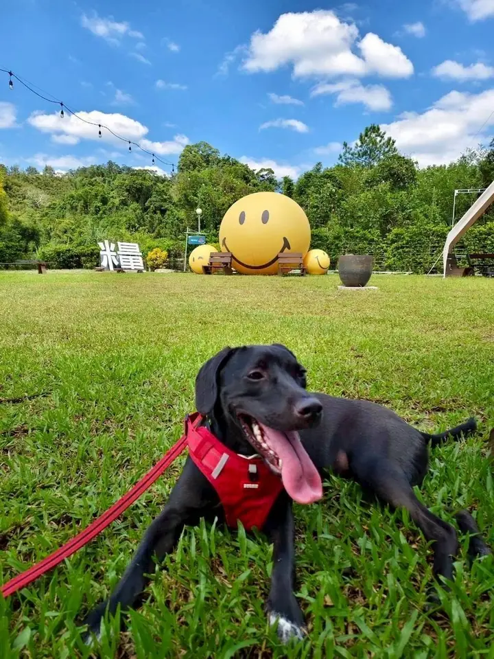
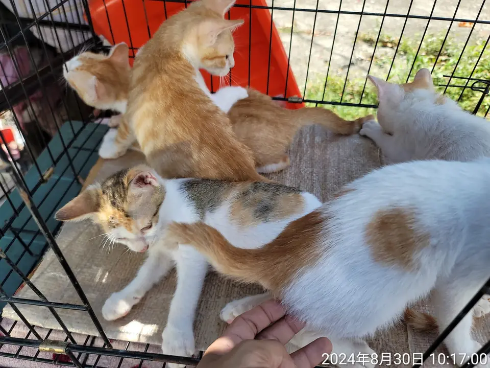
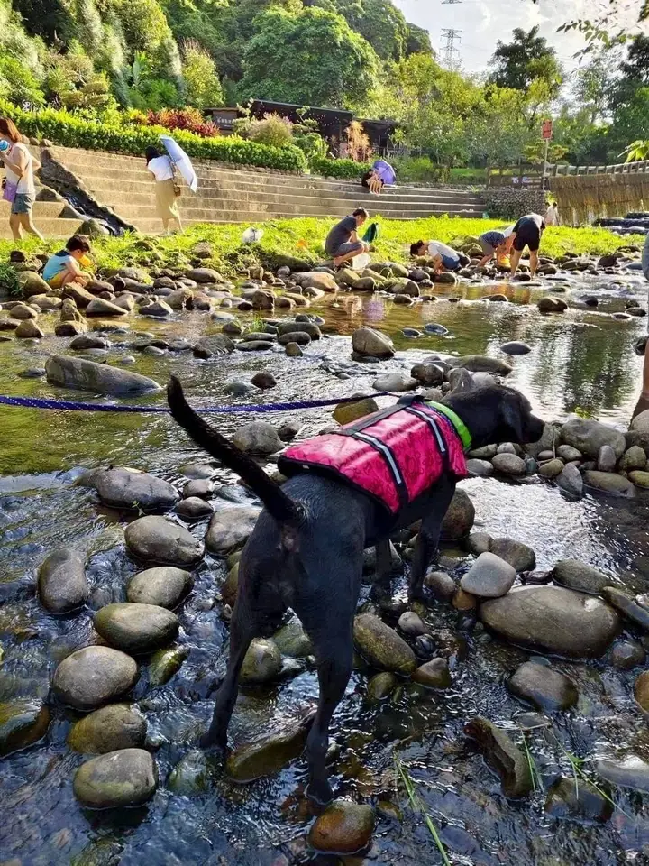
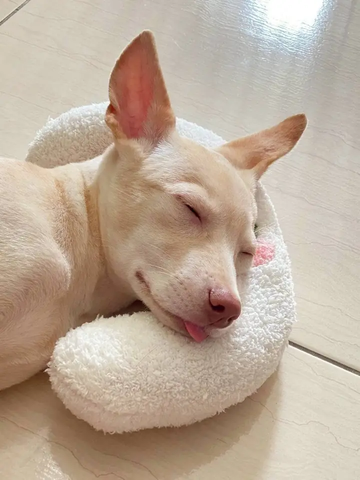
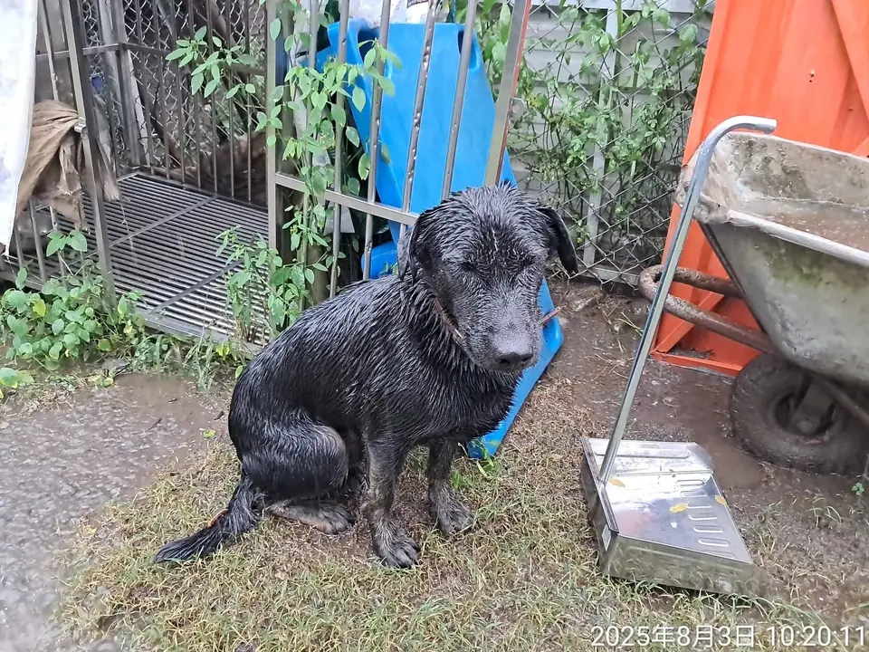
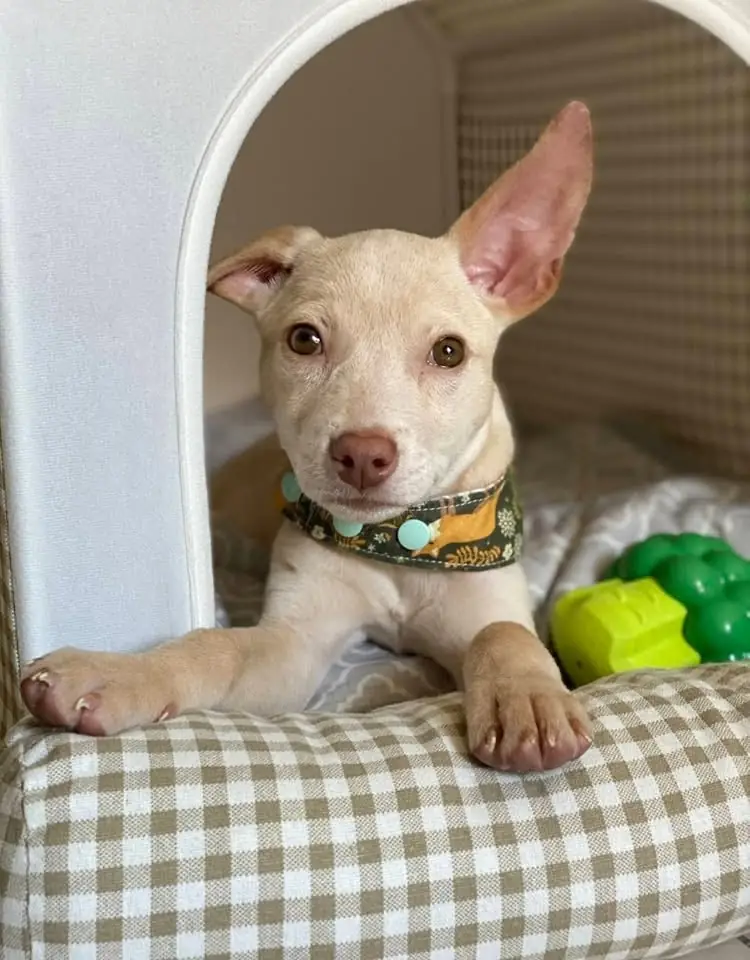
與其一直收容，
不如從源頭減量開始。
我們在做的事
-
源頭減量
01抓紮・TNR
誘捕、結紮、剪耳標記後原地回置。不再出生，流浪的數量就會一點一點變少。
-
接獲通報就出動
02救援・醫療
被車撞、被獸夾夾住、生病受傷的毛孩，鄉親一通報，我們就盡力趕到、送醫。
-
找一個家
03送養
幫幼犬、幼貓與親人的孩子找家，也會到地方活動辦送養會，讓更多人認識牠們。
-
每日照護
04收容・狗園
照顧約 120 隻無法回到街頭的孩子，包括肢體殘缺、需要長期照護的毛孩。
免費結紮資訊
家附近有需要結紮的狗狗貓咪嗎？協會不定期在六龜各里舉辦結紮場次。
近期結紮場次
誰可以免費結紮？
- 公貓 免費
- 母貓 免費
- 母狗 免費
- 公狗 自費 依體重計價・不剪耳
- 剪耳缺角＝已結紮 一眼就認得出來
- 免植入晶片
- 台灣之心出資 台灣之心愛護動物協會
- 六龜各里不定期 名額有限・看粉專公告
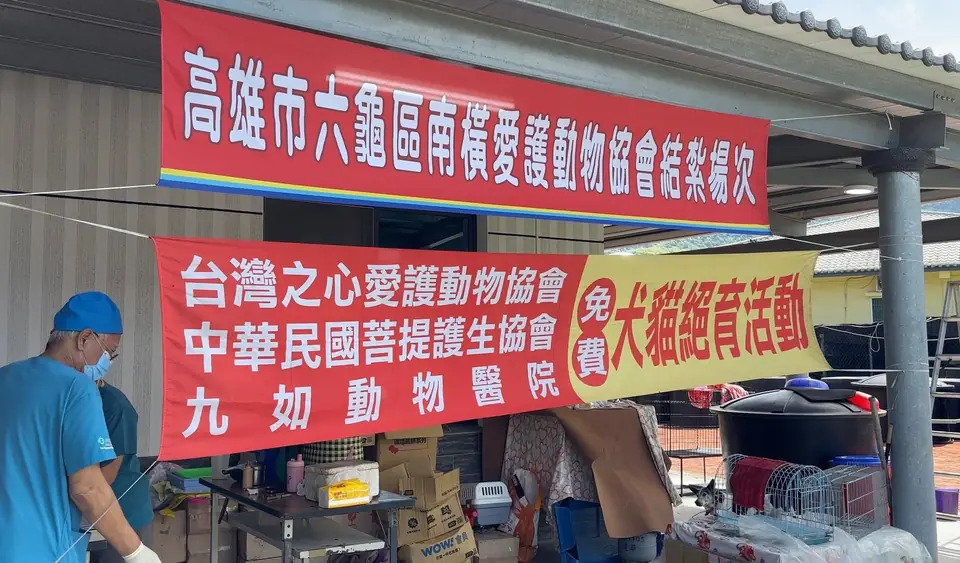
認養浪浪
認養，是答應牠一輩子。帶牠回家前，先看看這幾件事。
先問問自己
-
全家都同意？
租屋要先問房東
-
每天有空陪？
散步、陪玩、清便便
-
負擔得起嗎？
飼料、疫苗、看醫生
-
陪牠一輩子？
狗貓能活十幾年
飼主一定要做的事
- 晶片、寵物登記 狗貓都要，過戶到你名下
- 狂犬病疫苗 每年打一次
- 結紮 沒打算繁殖就要結紮
- 不棄養 棄養最高罰 15 萬
回家前的準備
- 飯碗、水碗
- 飼料
- 項圈、牽繩
- 外出籠
- 睡窩
- 貓砂盆
- 玩具
- 動物醫院
回家後，慢慢來
-
3天
躲起來很正常
給牠安靜的角落，別硬抱
-
3週
記住生活作息
固定時間吃飯、散步
-
3個月
把這裡當成家
開始撒嬌，放心睡覺
每個孩子的步調不一樣，慢一點也沒關係。
去哪裡認養
-
南橫動保協會
六龜、甲仙山裡的孩子
- 先私訊或來電聊聊
- 約時間見面、互動
-
高雄市公立收容所
壽山、燕巢動保園區
- 滿 18 歲，帶身分證
- 免費，含晶片、登記、狂犬病疫苗
- 週二到週日開園，週一和國定假日休
- 認養後到合作醫院結紮也免費
-
全國的收容所
農業部全國動物收容管理系統
- 可以選縣市、狗或貓
- 每隻都有照片和收容編號
資料查證於 2026 年 11 月（高雄市動物保護處、農業部），以官方最新公告為準。
帶一個孩子回家
以領養代替購買。山裡有很多親人的狗狗、貓咪，正在等一個家。
-
STEP 1
看看等家的孩子
粉專會不定期貼出待送養的狗狗、貓咪照片。
-
STEP 2
私訊或來電聊聊
說說你的生活環境，和想找什麼樣的家人。
-
STEP 3
見面互動
約時間認識彼此，確認你們合不合拍。
-
STEP 4
帶牠回家
歡迎常常分享近況，讓我們也放心。
現在等家的孩子
曾在這裡等家的孩子
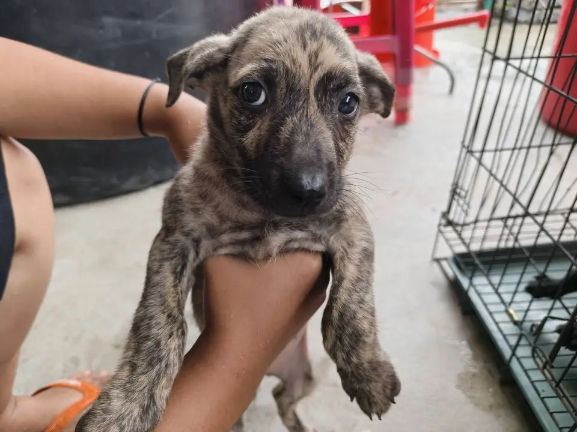
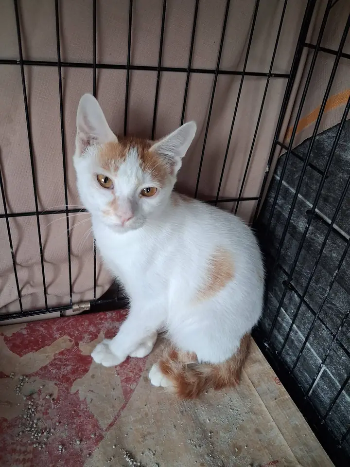
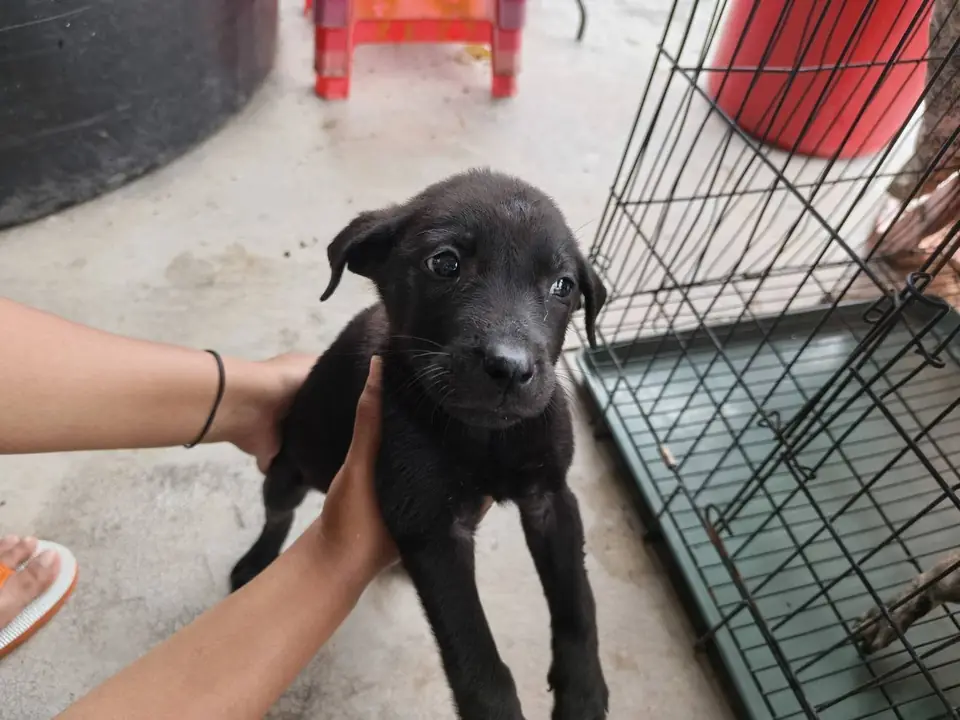
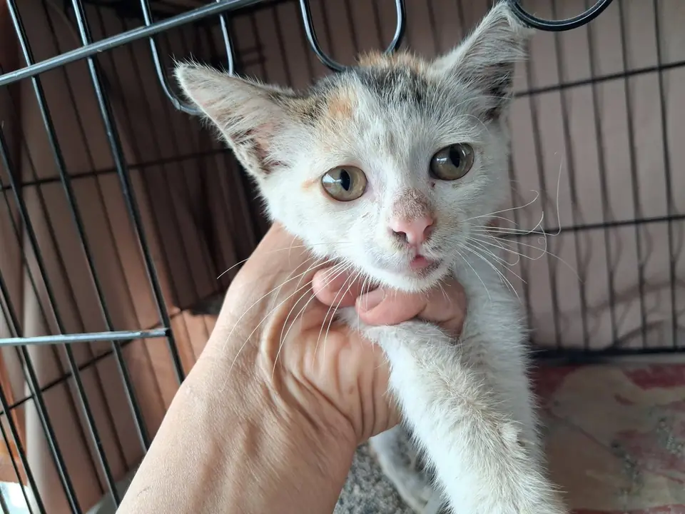
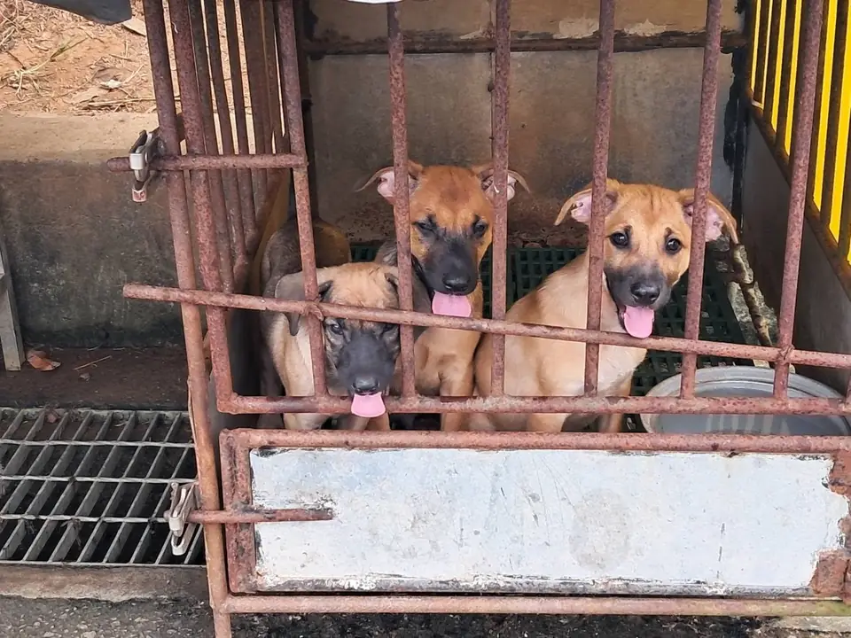
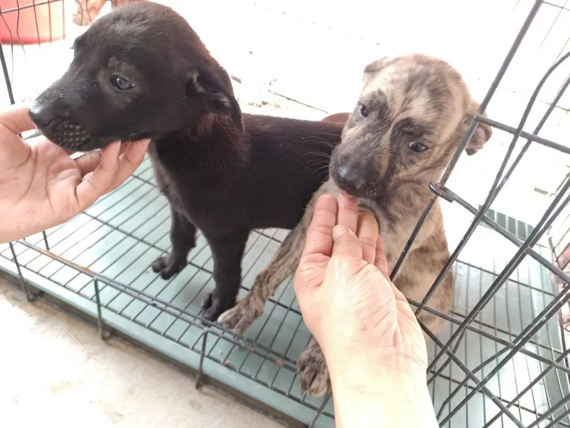
照片為過去送養過的孩子。最新的待送養名單，請看粉專。
遇到受傷的動物
先顧好自己，再打電話找人幫忙。
-
STEP 1
保持距離
別徒手抱，注意來車
-
STEP 2
拍照、記地點
路名、地標、電線桿號碼
-
STEP 3
打電話
先打協會，沒接到打 1999
-
STEP 4
放進紙箱
毛巾包著，先別餵食
打這幾支電話
- 南橫動保協會（羅小姐） 0977 755 973 六龜、甲仙先打・沒接到改打 1999
- 高雄市民專線 1999 24 小時
- 高雄市動物保護處 (07) 746-2368 平日上班時間
- 全國動物保護專線 1959 虐待・獸夾・山豬吊
特別情況
- 野生動物 別帶回家・打 1999
- 被獸夾夾住 別硬拉・打 1959
- 看到虐待 錄影存證・打 1959
- 像有主人 動物醫院掃晶片
電話資料查證於 2026 年 11 月，以各單位公告為準。
愛媽互助網
愛媽、愛爸都歡迎。照顧山裡的孩子，大家互相幫一把。
- 不公開餵食地點
- 不公開個人電話
- 聯絡都經過協會
互助看板
友善餵食守則
-
定時定點
固定時間、固定地方
-
吃完收乾淨
碗收走，不留食物
-
只放乾飼料
不放廚餘、魚骨頭
-
餵養也要結紮
先結紮，族群才不會變多
互助工具
相片集
狗園的日常、等家的小傢伙，還有每一場結紮與活動。
謝謝一路相伴的你們
狗園的飼料好幾次見底，都是助糧天使們及時補上。
感謝：台灣之心愛護動物協會、中華民國菩提護生協會、中華民國保護動物協會、愛心集食平台、糧舍商號、屏東九如動物醫院、警政文庫、公視 PeoPo、每一位助糧天使與熱心通報的鄉親。
常見問題
Q結紮真的免費嗎？
在協會的協助場次中，公貓、母貓、母狗可以免費結紮，並會剪耳缺角做標記。
經費由台灣之心愛護動物協會出資。
公狗需要自費，依體重計價。
名額有限，請依粉專公告的場次來電預約。
Q你們服務哪些地方？
以高雄市六龜區為主，延伸到甲仙等南橫沿線的偏鄉，例如荖濃里、建山里。
Q我想領養，要怎麼開始？
先到粉專看看等家的孩子，或直接來電、私訊羅小姐。
我們也會在地方活動舉辦送養會。
Q看到受傷或被丟棄的狗貓，該怎麼辦？
Q可以去狗園探望，或當志工嗎？
非常歡迎！為了照顧動物的作息，請先來電聯繫、約好時間再過來。
有任何問題，
直接打給我們
結紮預約、通報、領養，都可以聯繫羅小姐。
- 電話 0977 755 973 羅小姐
-
Email
a0977755973
@gmail.com - Facebook 龜島浪攤子
- LINE 南橫動保協會 加好友就能直接傳訊息